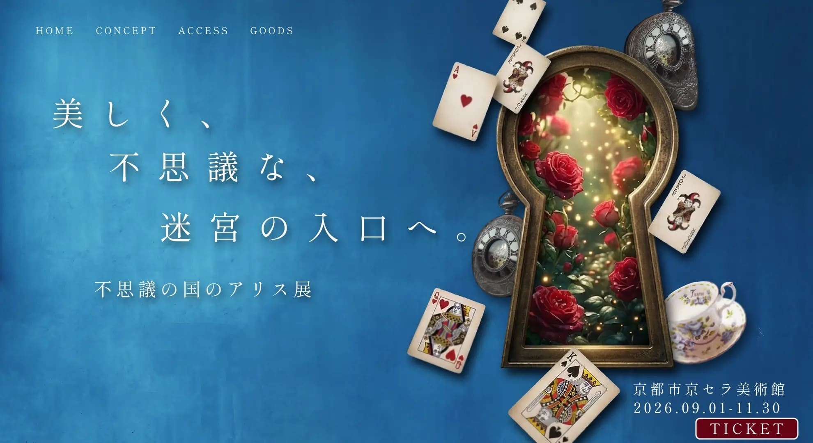

←
Back to Works

Concept & Approach
Direction
あえてキャラクターとしての「アリス」をビジュアルに登場させない手法を採用。ユーザー自身が物語の主人公として迷い込む感覚を演出しました。
Color
「くすみブルー」を基調に、トランプを象徴する赤・白・黒をアクセントとして配置。
Typography
不思議の国のアリスが持つ「文学的・幻想的」な雰囲気と、京セラ美術館の「レトロ・重厚」な空気感を表現
Next Work
NAGITUJI
Bakery
→